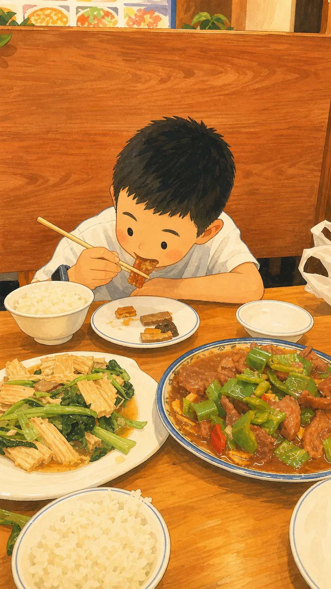
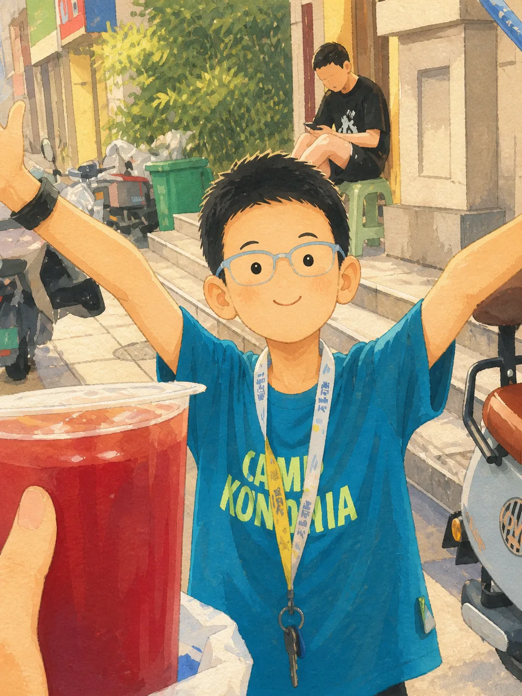
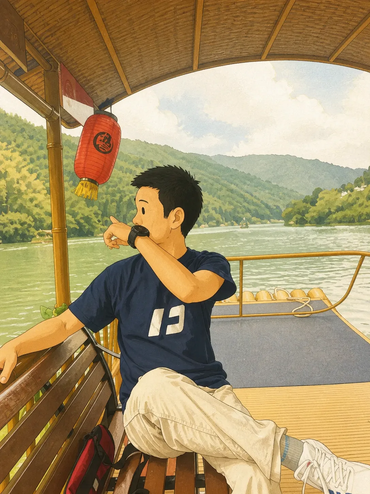
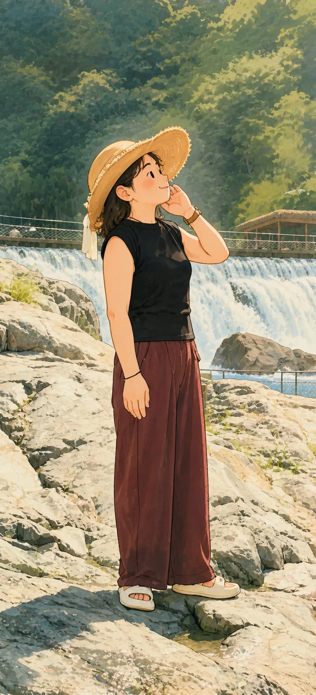
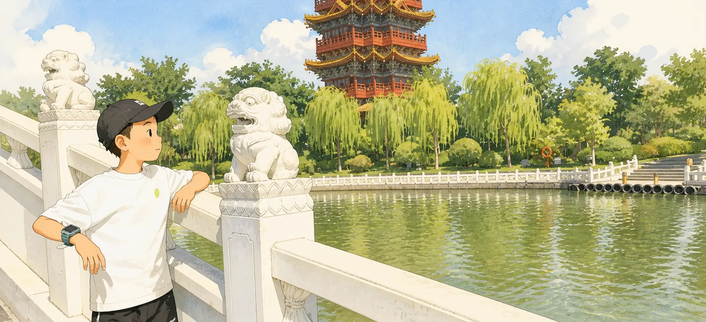
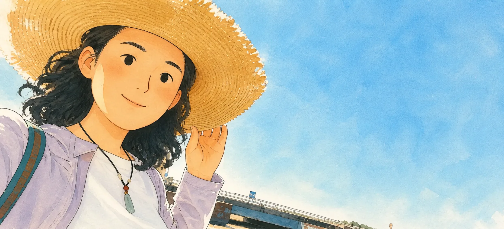
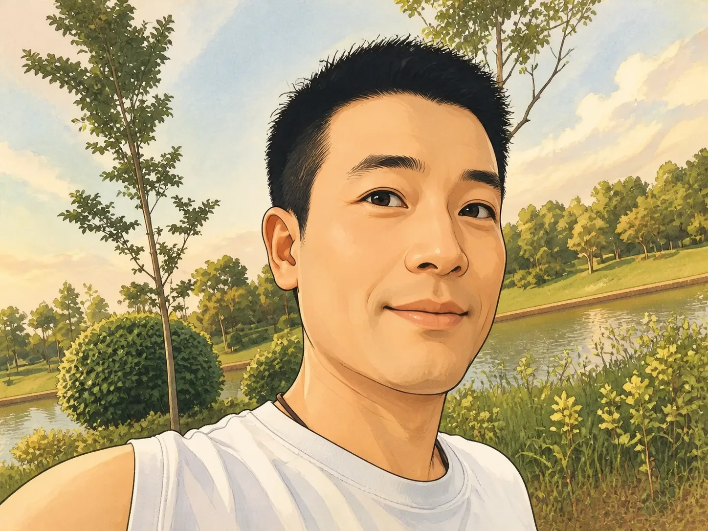
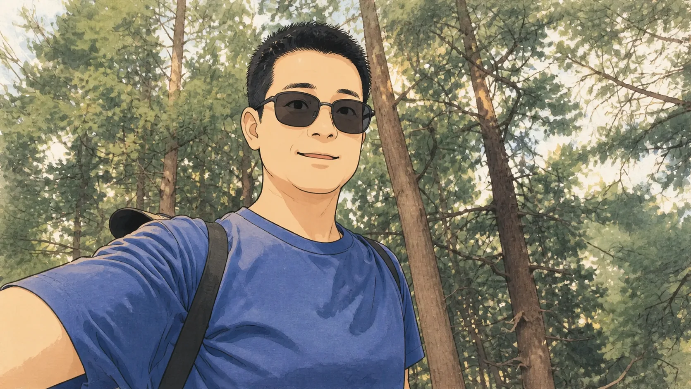
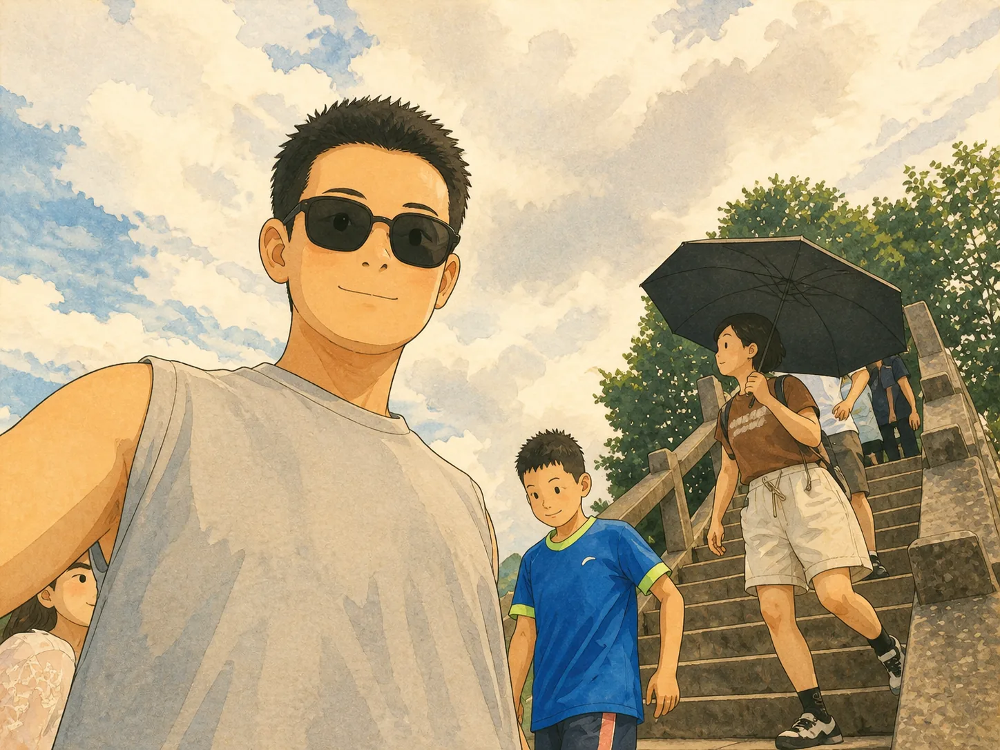
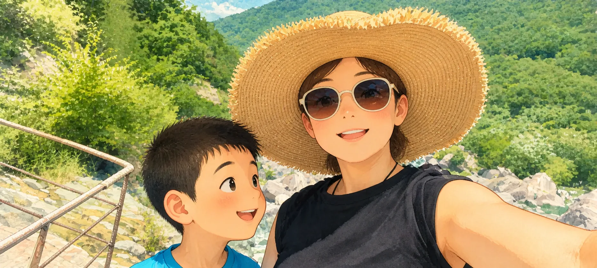

A LETTER HOME · 2026
后来整理这些照片的时候，
后来整理这些照片的时候，
我突然发现一件事。

我和弟弟的很多记忆，
都是从你们开始的。
那时候，弟弟还很小。
一顿饭，一次出门，
一张照片，
好像都是再普通不过的事。

小时候的我们大概不会知道，
镜头里留下的是孩子的开心，
镜头外，却总有人
替我们记得所有细小的事情。
THE ORDINARY DAYS
后来我才明白，
后来我才明白，
所谓家，大部分时候
并没有什么大事发生。
它只是很多很多个，
当时觉得再普通不过的日子。


你们也会出门，会看风景，
会在某一个普通的瞬间，
认真地留下自己的样子。

照片里有山，有水，
也有你们走过的普通一天。

以前，我们只顾着看世界。
后来再翻这些照片，
我才开始认真地看你们。
可照片有一个很安静、
也很残忍的地方。
它会提醒我——
时间真的过去了。


我和弟弟一直在长大。
可直到很久以后，
我才意识到——
你们也在慢慢变老。

以前出门的时候，
我和弟弟总觉得跟着你们就好了。
好像你们永远知道，
应该往哪里走。
现在，我也慢慢长大了。
以后是不是也可以换我，
站得稍微靠前一点。

爸爸，妈妈。
有很多话，
当面说的时候总觉得有点不好意思。
所以我把它们，
藏进了这个网页里。
谢谢你们，
让我在很长很长的一段人生里，
都有一个可以放心回去的地方。
谢谢那些我已经记得，
和已经记不得的事情。
谢谢你们看着我和弟弟，
一点一点长大。